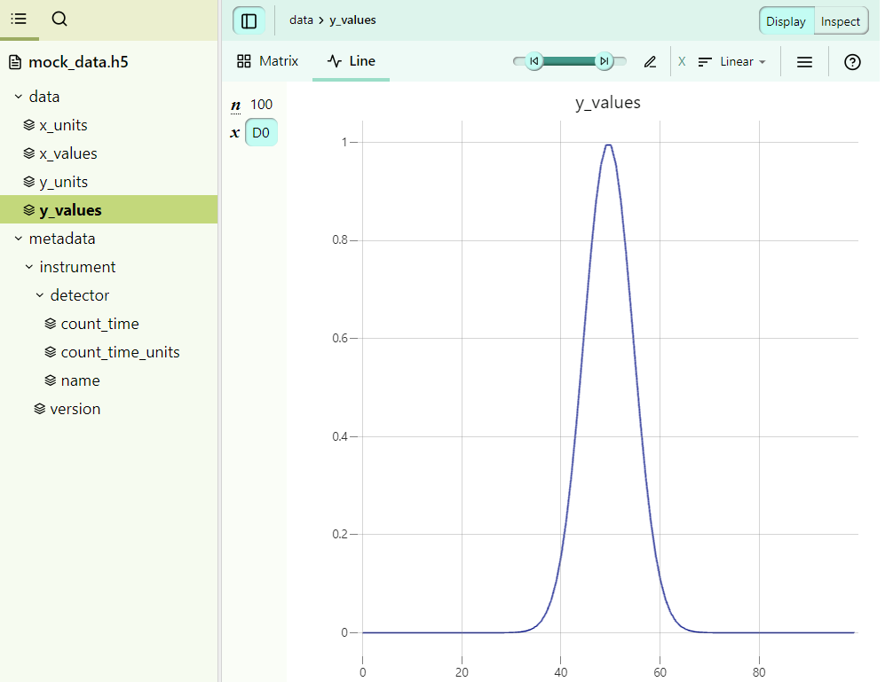

How to use the built-in MultiFormatReader¶
While building on the BaseReader allows for the most flexibility, in most cases it is desirable to implement a reader that can read in multiple file formats and then populate the template based on the read data. For this purpose, pynxtools has the MultiFormatReader, which can be readily extended for your own data. In this how-to guide, we will focus on an implementation using a concrete example. If you are also interested in the general structure of the MultiFormatReader, you can find more information here.
Getting started¶
You can find all of the data and the developed Python scripts here:
Here, we will implement a reader called MyDataReader that builds on the MultiFormatReader. MyDataReader is an example for a reader that can read HDF5 data from a specific technology-partner data set, as well as additional metadata from am electronic lab notebook (in YAML format).
For demonstration purposes, we will work with a very simple mock application definition:
<definition xmlns="http://definition.nexusformat.org/nxdl/3.1" xmlns:xsi="http://www.w3.org/2001/XMLSchema-instance" category="application" type="group" name="NXsimple" extends="NXobject" xsi:schemaLocation="http://definition.nexusformat.org/nxdl/3.1 ../nxdl.xsd">
<doc>
Mock application definition.
</doc>
<group type="NXentry">
<field name="definition">
<attribute name="version"/>
<enumeration>
<item value="NXsimple"/>
</enumeration>
</field>
<field name="title"/>
<group type="NXuser" recommended="true">
<field name="name">
<doc>
Name of the user.
</doc>
</field>
<field name="address" recommended="true">
<doc>
Name of the affiliation of the user.
</doc>
</field>
</group>
<group type="NXinstrument">
<doc>
Description of the instrument and its individual parts.
</doc>
<attribute name="version">
<doc>
Version of the instrument.
</doc>
</attribute>
<group type="NXdetector" optional="true">
<field name="count_time" type="NX_NUMBER" units="NX_TIME" recommended="true">
<doc>
Elapsed actual counting time
</doc>
</field>
</group>
</group>
<group name="sample" type="NXsample">
<field name="name"/>
<field name="physical_form" recommended="true"/>
<field name="temperature" type="NX_FLOAT" recommended="true" units="NX_TEMPERATURE"/>
</group>
<group name="data" type="NXdata">
<doc>
The default NXdata group containing a view on the measured data.
</doc>
</group>
</group>
</definition>
The application definitions requires a user, some sample information, some instrument metadata, and the measured data to be written. Some groups, fields, and attributes are strictly required (the default), others are just recommended or optional.
Note that in order to be recognized as a valid application definition, this file should be copied to the applications folder within the definitions submodule at pynxtools.definitions.
We first start by implementing the class and its __init__ call:
"""MyDataReader implementation for the DataConverter to convert mydata to NeXus."""
from typing import Any
from pynxtools.dataconverter.readers.base.reader import ParseJsonCallbacks, MultiFormatReader
class MyDataReader(MultiFormatReader):
"""MyDataReader implementation for the DataConverter to convert mydata to NeXus."""
supported_nxdls = [
"NXsimple"
]
def __init__(self, *args, **kwargs):
super().__init__(*args, **kwargs)
self.extensions = {
".yml": self.handle_eln_file,
".yaml": self.handle_eln_file,
".json": self.set_config_file,
".hdf5": self.handle_eln_file,
".h5": self.handle_eln_file,
}
READER = MyDataReader
Note that here we are adding handlers for three types of data file extensions:
".hdf5",".h5": This will be used to parse in the (meta)data from the instrument's HDF5 file.".yml",".yaml": This will be used to parse in the (meta)data from the ELN file.".json": This will be used to read in the config file, which is used to map from the (meta)data concepts from the instrument and ELN data to the concepts in the NXDL file.
Reading in the instrument's data and metadata¶
First, we will have a look at the HDF5 file. This mock HDF5 file was generated with h5py using a simple script:

Here, we see that we have a data group with x and y values, as well as some additional metadata for the instrument.
Here is one way to implement the method to read in the data:
import h5py
def handle_hdf5_file(filepath):
def recursively_read_group(group, path=""):
result = {}
for key, item in group.items():
new_path = f"{path}/{key}" if path else key
if isinstance(item, h5py.Group):
# Recursively read subgroups
result.update(recursively_read_group(item, new_path))
elif isinstance(item, h5py.Dataset):
# Read datasets
result[new_path] = item[()]
return result
# Open the HDF5 file and read its contents
with h5py.File(filepath, "r") as hdf:
self.hdf5_data = recursively_read_group(hdf)
return {}
Note that here we are returning an empty dictionary because we don't want to fill the template just yet, but only read in the HDF5 data for now. We will use the config file later to fill the template with the read-in data. Note that it is also possible to return a dictionary here to update the template directly.
self.hdf5_data will look like this:
{
"data/x_values": array([-10. , -9.7979798 , -9.5959596 , ..., 10. ]),
"data/y_values": array([3.72665317e-06, 6.14389891e-06, 1.00262383e-05, ..., 3.72665317e-06]),
"data/x_units": "eV",
"data/y_units": "counts_per_second",
"metadata/instrument/version": 1.0,
"metadata/instrument/detector/name": "my_gaussian_detector",
"metadata/instrument/detector/count_time": 1.2,
"metadata/instrument/detector/count_time_units": s",
}
Reading in ELN data¶
As we can see in the application definition NXsimple above, there are some concepts defined for which there is no equivalent metadata in the HDF5 file. We are therefore using a YAML ELN file to add additional metadata. The ELN file eln_data.yaml looks like this:
title: My experiment
user:
name: John Doe
address: 123 Science Rd, Data City, DC
sample:
name: my_sample
physical_form: powder
temperature:
value: 300
unit: K
It contains metadata about the user and the sample that was measured.
We now need to write a function to read in this ELN data. Luckily, there exists already a solution within pynxtools, using the parse_yaml function:
from pynxtools.dataconverter.readers.utils import parse_yml
CONVERT_DICT = {
"unit": "@units",
"version": "@version",
"user": "USER[user]",
"instrument": "INSTRUMENT[instrument]",
"detector": "DETECTOR[detector]",
"sample": "SAMPLE[sample]",
}
def handle_eln_file(self, file_path: str) -> dict[str, Any]:
self.eln_data = parse_yml(
file_path,
convert_dict=CONVERT_DICT,
parent_key="/ENTRY[entry]",
)
return {}
When this method is called, self.eln_data will look like this:
{
"/ENTRY[entry]/title": "My experiment",
"/ENTRY[entry]/USER[user]/name": "John Doe",
"/ENTRY[entry]/USER[user]/address": "123 Science Rd, Data City, DC",
"/ENTRY[entry]/SAMPLE[sample]/name": "my_sample",
"/ENTRY[entry]/SAMPLE[sample]/physical_form": "powder",
"/ENTRY[entry]/SAMPLE[sample]/temperature": 300,
"/ENTRY[entry]/SAMPLE[sample]/temperature/@units": "K"
}
Note that here we are using parent_key="/ENTRY[entry]" as well as a CONVERT_DICT, meaning that each key in self.eln_data will start with "/ENTRY[entry]" and some of the paths will be converted to match the template notation. This will be important later.
Parsing the config file¶
Next up, we can make use of the config file, which is a JSON file that tells the reader how to map the concepts from the HDF5 and ELN files in order to populate the template designed to match NXsimple. The choices made in the config file define how semantics from the source (data file) and target (NeXus application definition) side are mapped. Essentially, the config file should contain all keys that are present in the NXDL. In our case, the config file looks like this:
{
"/ENTRY/title": "@eln",
"/ENTRY/USER[user]": {
"name":"@eln",
"address":"@eln:/ENTRY/USER[user]/address",
},
"/ENTRY/INSTRUMENT[instrument]": {
"@version":"@attrs:metadata/instrument/version",
"DETECTOR[detector]":{
"count_time":"@attrs:metadata/instrument/detector/count_time",
"count_time/@units":"@attrs:metadata/instrument/detector/count_time_units"
}
},
"/ENTRY/SAMPLE[sample]": {
"name":"@eln",
"physical_form":"@eln",
"temperature":"@eln",
"temperature/@units":"@eln"
},
"/ENTRY/data": {
"@axes":["x_values"],
"@signal": "data",
"data": "@data:y_values",
"data/@units": "@attrs:data/y_units",
"x_values/@units": "@attrs:data/x_units",
"x_values/@units": "@data:x_values"
}
}
Note that here we are using @-prefixes which are used to fill the template from the different data sources. We discuss this below in more detail.
We also implement a method for setting the config file in the reader:
def set_config_file(self, file_path: str) -> dict[str, Any]:
if self.config_file is not None:
logger.info(
f"Config file already set. Replaced by the new file {file_path}."
)
self.config_file = file_path
return {}
Filling the template from the read-in data¶
Finally, after reading in all of the data and metadata as well as designing the config file, we can start filling the template. For this, we must implement functions that are called using the reader's callbacks.
We will start with the @attrs prefix, associated with the attrs_callback. We must implement the get_attr method:
def get_attr(self, key: str, path: str) -> Any:
"""
Get the metadata that was stored in the main file.
"""
if self.hdf5_data is None:
return None
return self.hdf5_data.get(path)
This method (and all similar callbacks methods) have two inputs:
key, which is a key in the config file. Note that here, the generic"/ENTRY/"gets replaced byf"/ENTRY[{entry_name}]/", whereentry_nameis the one of the entries of theself.get_entry_namesmethod.path, which is the part of the config value that comes after the@attrs:prefix. For example, for the config value"@attrs:my-metadata", the extracted path ismy-metadata.
For the get_attr method, we are making use of the path. For example, for the config value "@attrs:metadata/instrument/version", the extracted path is metadata/instrument/version, which is also one of the keys of the self.hdf5_data dictionary.
For the ELN data, we must implement the get_eln_data function that gets called from the eln_callback when using the @eln prefix:
def get_eln_data(self, key: str, path: str) -> Any:
"""Returns data from the given eln path."""
if self.eln_data is None:
return None
return self.eln_data.get(key)
Here, we are making use of the fact that we have used CONVERT_DICT in the parse_yml function above. Thus, the keys of the self.eln_data dictionary are exactly the same as those in the config file (for example, the config key "/ENTRY[entry]/USER[user]/address" also exists in self.eln_data). Therefore, we can just get this data using the key coming from the config file.
Finally, we also need to address the @data prefix, which gets used in the data_callback to populate the NXdata group in the template. Note that here we use the same @data prefix to fill the x_values as well as the data (from y_values) fields. We achieve this by using the path that follows @data: in the config file:
def get_data(self, key: str, path: str) -> Any:
"""Returns measurement data from the given hdf5 path."""
if path.endswith(("x_values", "y_values")):
return self.hdf5_data.get(f"data/{path}")
else:
logger.warning(f"No axis name corresponding to the path {path}.")
Bringing it all together¶
Et voilà! That's all we need to read in our data and populate the NXsimple template. Our final reader looks like this:
import logging
from typing import Any
import h5py
from pynxtools.dataconverter.readers.multi.reader import MultiFormatReader
from pynxtools.dataconverter.readers.utils import parse_yml
logger = logging.getLogger("pynxtools")
CONVERT_DICT = {
"unit": "@units",
"version": "@version",
"user": "USER[user]",
"instrument": "INSTRUMENT[instrument]",
"detector": "DETECTOR[detector]",
"sample": "SAMPLE[sample]",
}
class MyDataReader(MultiFormatReader):
"""MyDataReader implementation for the DataConverter to convert mydata to NeXus."""
supported_nxdls = [
"NXsimple"
]
def __init__(self, *args, **kwargs):
super().__init__(*args, **kwargs)
self.extensions = {
".yml": self.handle_eln_file,
".yaml": self.handle_eln_file,
".json": self.set_config_file,
".hdf5": self.handle_hdf5_file,
".h5": self.handle_hdf5_file,
}
def set_config_file(self, file_path: str) -> dict[str, Any]:
if self.config_file is not None:
logger.info(
f"Config file already set. Replaced by the new file {file_path}."
)
self.config_file = file_path
return {}
def handle_hdf5_file(self, filepath) -> dict[str, Any]:
def recursively_read_group(group, path=""):
result = {}
for key, item in group.items():
new_path = f"{path}/{key}" if path else key
if isinstance(item, h5py.Group):
# Recursively read subgroups
result.update(recursively_read_group(item, new_path))
elif isinstance(item, h5py.Dataset):
# Read datasets
result[new_path] = item[()]
return result
# Open the HDF5 file and read its contents
with h5py.File(filepath, "r") as hdf:
self.hdf5_data = recursively_read_group(hdf)
return {}
def handle_eln_file(self, file_path: str) -> dict[str, Any]:
self.eln_data = parse_yml(
file_path,
convert_dict=CONVERT_DICT,
parent_key="/ENTRY[entry]",
)
return {}
def get_attr(self, key: str, path: str) -> Any:
"""
Get the metadata that was stored in the main file.
"""
if self.hdf5_data is None:
return None
return self.hdf5_data.get(path)
def get_eln_data(self, key: str, path: str) -> Any:
"""Returns data from the given eln path."""
if self.eln_data is None:
return None
return self.eln_data.get(key)
def get_data(self, key: str, path: str) -> Any:
"""Returns measurement data from the given hdf5 path."""
if path.endswith(("x_values", "y_values")):
return self.hdf5_data.get(f"data/{path}")
else:
logger.warning(f"No axis name corresponding to the path {path}.")
READER = MyDataReader
Using the reader¶
We can call our reader using the following command
dataconverter mock_data.h5 eln_data.yaml -c config_file --reader mydatareader --nxdl NXsimple --output output.nxs
The final output.nxs file gets automatically validated against NXsimple, so we can be sure that it is compliant with that application definition. Here is a look at our final NeXus file: